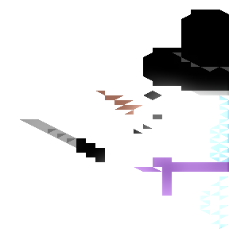

(Please note: The game does not work on Windows 8, Windows 10 or on a Mac) -http://store.steampowered.com/app/389900/
https://twitter.com/SimoRoth/status/705714215579983873 @SimoRoth @IcepickInTheory Microsoft is just following in Apples footsteps. We need to confiscate their WhatWouldSteveJobsDo? bracelets.
https://twitter.com/Graham_T_S/status/705522603834871808 @GrimSpence How big is the horn?
George Lucas ruined my bladder, I went to a Three film marathon in '83 and needed to pee desperately for the last two films. @CharlotteGore
https://twitter.com/WMDLC/status/703312949159575552 @WMDLC @gameblast16 Our pleasure!
@magic_bane yes but now you can make new elite plus old elite, just give in, its bound to happen.
@magic_bane and you said you didn't have a game idea to make next :)
childish magnet by XIX in 48x48 #pixelart using the Spectrum palette. Visit http://paint.lo4d.net/ to draw your o…
https://twitter.com/wetgenes/status/700638788922388480 @xranby The Mailinator blog has some interesting posts on it as well. Especially the older ones eg http://mailinator.blogspot.co.uk/2007/01/architecture-of-mailinator.html
https://twitter.com/xranby/status/700624769838780416 @xranby http://mailinator.com/ is the one I've been using for a long time. That and http://bugmenot.com/ is all you need :)
@magic_bane thats a people problem, same thing could be said of twitter or anything comprised primarily of meatbags. https://www.youtube.com/watch?v=ZqcXgODTeOU
@magic_bane failchan isn't as OMG pure evil as "the media" thinks it is. Old media is somewhat biased about these things after all.
careful ski jump by shi in 48x48 #pixelart using the NES palette. Visit http://paint.lo4d.net/ to draw your own!
@magic_bane ROBOT9001 http://blog.xkcd.com/2008/01/14/robot9000-and-xkcd-signal-attacking-noise-in-chat/
r9k on failchan still seems to exist
lethal snowman by Crustolio in 48x48 #pixelart using the C64 palette. Visit http://paint.lo4d.net/ to draw your o…

https://twitter.com/Tony_Gowland/status/699908571870449664 @FreakyZoid
Q: How did Mulder know he had to take drugs to communicate with the terrorist in a coma?
A: Maybe he just wanted the drugs.
Not the XCOM2 dilemma I was looking for: I have an ironman save game that crashes on load. Do I wait and hope for a patch? or restart?
https://twitter.com/wetgenes/status/699904341956763649 TV was misbehaving due to depreciated APIs. One thing I have learnt in the last 10 years is never use the API always scrape the website...
I dun fuxed our old TV set. http://tv.wetgenes.com/ I guess that thing must be about ten years old now.